警告
警告
这篇文章其实并不是完整版，完整版可以用一些特殊方法看到。
另外，我也不是很支持你在现实中模仿我们的行为，毕竟这也是学校公共财产，不要去随意占用，就当我在讲个故事吧。
相信对我比较了解的小伙伴都知道我和我最好的朋友 AbCd 考上了株洲市南方中学，但人家好歹是个重点高中，一体机的性能比一些普通民办高中差的远，机房我就更不想说了，2GB 内存我想不到除了能开机还能干什么（甚至还装了个 Win10 系统），对于我们这种开发者，当务之急是找一台好电脑。班上的希沃用的 8 代酷睿和 4GB 内存，虽然放在现在勉强能用，开个 PPT 也没有太大问题，但开个 VSCode 还是能吃满，再挂个 PS 电脑风扇叫的比 AbCd 被 * 还响，我就这样拿着这台 git 扫描要扫半天，Edge 开个 GitHub 就快不行了的破电脑硬生生写出了很多程序，但有一天，转机来了。
我在 404-2 教室里午托，那个教室里堆满了灰尘，一看就是没人用的废弃教室。但黑板里镶嵌的一块屏幕吸引了我的注意：那是一台崭新的希沃，虽然灰尘让它失去了光泽，边框比我们班上用的小的多，屏幕质感也很舒服。经确认，这是希沃 7 代机，而且全校仅此一台。每次中午午休，我都想打开这台电脑看看，但不幸的是，那一层楼是年级组办公室所在地，经常有人巡查。终于有一天，我实在按捺不住内心的好奇，将此事告诉了 AbCd。我们找了个时间，偷偷打开电脑，我彻底惊呆了——那台电脑的配置比我现在用的电脑还要好！12 代 i5，8GB 内存，最重要的是有 4K60 帧的屏幕！我们自己班上的只能开 1080P，而且系统动画未必能跑满 60 帧，云母都够显卡喝一杯了，按下 Win+Tab 任务视图动画更是一坨，但那台电脑在 4K 并全特效情况下仍然流畅。再一看，这台希沃的主体部分竟然是安卓 14！我自己手机都只是安卓 12，我之前认为我一个安卓佬不配用苹果，现在是不配玩希沃了。所以我真不知道南方怎么想的，这么好的东西不给我们教学使用，而是放在这里被人遗忘，连硬盘都是空的，几乎找不到使用痕迹。
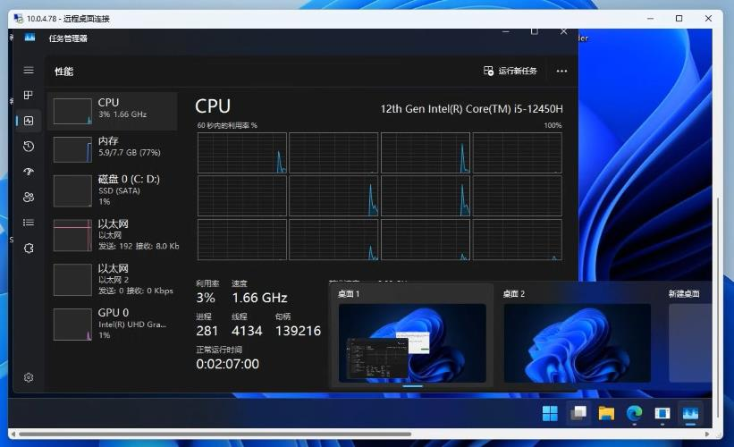
从此，每次午托我都盯着那台电脑，快被馋死了，当然更多是难受，就好像伯乐看到千里马骈死于槽枥之间。总想将其据为己有。后来，我们班上另外一个人找到另一个废弃教室——207 教室，那台电脑和其他班一样也是 8 代，性能并无出众之处，唯一亮点是其他班都是 128G 硬盘，它有 256。我把那台电脑重装了并格式化全盘，余下来的空间用来找种子和下片。那台除了迅雷啥也不会干的电脑突然给了我灵感：反正我们都在局域网内，那台 12 代的电脑所处的位置又太危险，为什么不 RDP？
说干就干，我宣布，废弃电脑拯救计划 现在开始！
计划的第一步，是在保证安全性的同时进行原理验证。我们先用 207 电脑做实验。我先用 ipconfig 查了一下，并记住了 207 电脑的 IP，然后在自己班上打开 mstsc，诶，为什么连不上？
原来是要在系统设置里把远程控制打开，但又出现一个新问题：用 mstsc 连接时弹出需要输入用户名和密码，用户名无非是 Administrator 嘛，密码我留了空，毕竟本来就没密码，但是却显示我没权限。
AbCd 想出了一个好主意：新建一个用户并设置好密码，然后给个管理员权限。
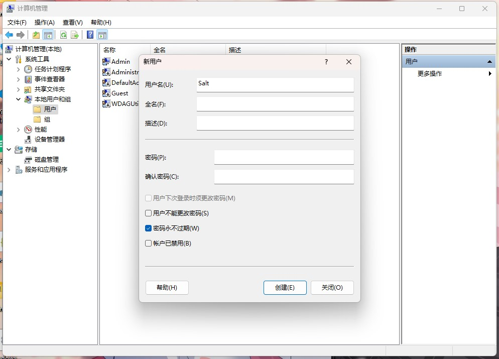
这里我想提醒大家，虽然电脑的管理员叫 Administrator，但你给一个用户分配权限的时候（用户属性中“隶属于”选项卡）要使用 Administrators！微软会教你分清单复数。
我成功用这个账户连接到那台挂迅雷的电脑，当我看到 OOBE 结束，桌面展示在我眼前，我是如此激动，在那里发癫，就像原始人第一次见到电脑。并且你知道吗，Windows RDP 原生支持触屏，而且在内网里延迟真的很低，画质肉眼都看不出什么压缩，我宣布 mstsc 是微软搞出来的最好的软件！而且老师用 Administrator 账户上课，能正常进行教学，我们登录和他完全没有干扰，老师那里也不会有任何显示。两个用户如同两个完全分割的世界，老师如往常一样进行上课，似乎什么都没有发生。
现在，我的眼睛里充满了希望，我已经瞄准了下一个目标，我的 U 盘也开始准备下载各种文件，现在，我们只需要一个机会。
拓展
其实到这里，RDP 的劣势已经凸显出来了，不能连接未设密码的账户，固定3389端口，因此，我们也可以使用 VNC。
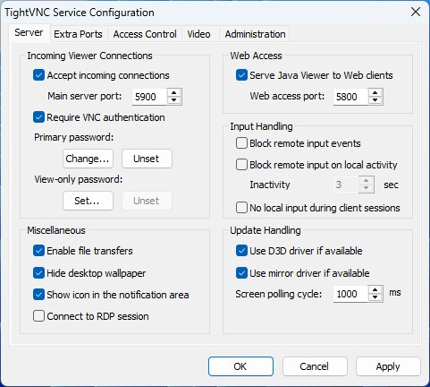
这里我们以 Tight VNC 为例，安装非常简单，基本上就是一路 Next，然后在安卓手机或其他设备上安装 RVNC Viewer 等软件（电脑上不要装RealVNC，要登录，麻烦的死），连接到 IP + 端口号（例如 10.0.64.77:5900）就可以直连 Administrator，看到老师在干什么，你也可以在老师板书的时候偷偷用橡皮擦工具擦掉，但这样太贱了，我们都是在不影响正常教学的情况下使用的。
Tight VNC 提供的 Viewer 也可使用。
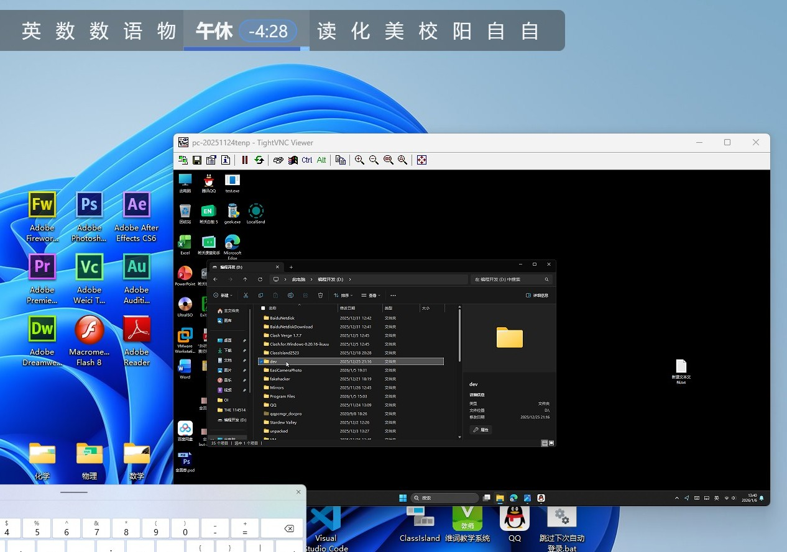
当然，使用 VNC 在某些方面可以说是下下策（例如对触控不友好，连接质量差，没有自适应）所以还是老老实实用 RDP。
那手机上能使用 RDP 吗？当然可以！
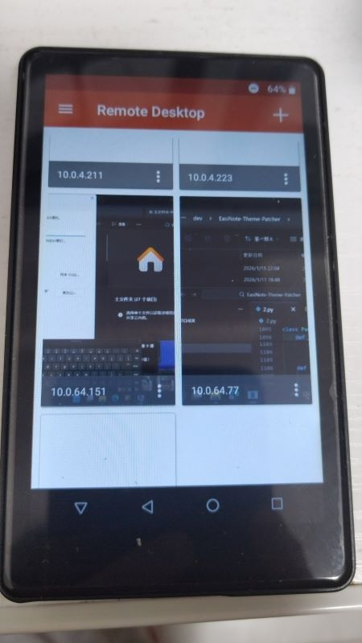
首先下载软件（不要去 Google Play 下载最新版 Windows Apps，那个一点都不好用）使用方法和电脑端相差无几，同样能自适应分辨率并具有原生触控，不知道的还以为给手机刷了个 Win11。
11 月底，我们因期中考试重新分培优班，404-2 将成为培优班教室，也就是说，那匹“千里马”终于得以重见天日。如果有人要在这里上培优课，那势必会有大量人经过这里，那安全性反而提高了，没有人会发现混进去一个人。我找了个机会，偷偷潜入 404，仔细打量那台电脑。那台电脑原装的 Win10 22H2，虽然说完全满足开发需求，但这么好的配置，不装 Win11 岂不浪费？而且我也很想看看 Win11 近乎完美的触摸和高 DPI 适配在 4K60 帧上表现如何，因此，我有个大胆的想法：先重装系统！
为了方便，我使用 EasyRC 进行重装。EasyRC 不仅可以帮我们干掉烦人的 Windows Defender，自动导入驱动，还具有无人值守功能，不需要太多人工操作，而且基础配置在原系统上就能搞定，PE 都不用进，大大降低了风险（我可没接广，这玩意真的好用）在制定好完备的计划后，Just do it。
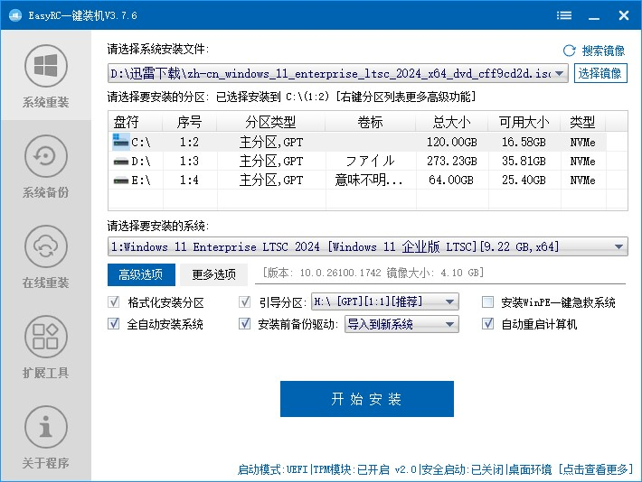
17:40，老师同学们都去食堂就餐，我和 AbCd 开始在原 Win10 上配置 RDP。404 旁边就是年级组办公室，风险极高，我对 Windows 用户账户管理不是非常熟悉，所以 AbCd 负责创建账户，我负责放风。
当 AbCd 深吸一口气，踏进教室，原本黑漆漆的教室突然亮起来，这把我们都吓了一跳，回头一看，是教室后面的监控，检测到人体就自动亮灯，我安慰好 AbCd，让他继续尽快操作，年级组这个时候应该不会看监控。此时 AbCd 目不转睛地盯着屏幕，手指快速地点击着。我也趴在门口，仔细观察左右两边的人，确保没有老师，就像在执行秘密任务一般。
终于，AbCd 花费不到两分钟便配置好账户，并将我的 U 盘留在一体机上，我们快速撤离。
我回到 AbCd 的班上，重新打开 mstsc 并输入那串熟悉的 IP 地址，输入密码，接着我将 U 盘里的镜像解压，将 install.wim 放在本地目录，然后让 EasyRC 自己装。现在只要等就行，它会帮我们搞定一切。
饭后，在重装完的电脑上再次配置好 RDP 用户，我们再次连接到 404。因为晚饭后的第一节自习就是培优课，因此开发环境什么的都不重要，重要的是把希沃白板，Office，QQ 等常用软件装好。我们用最快的速度下载好希沃白板的安装包并安装，并使用 Office Tool Plus 部署 Office，然后学校的网速还是太慢，离上课只有最后 26 分钟，而 Office 只下载到一半，时间正一分一秒流逝，在最后几分钟终于完成了下载。现在，我只希望它能尽快完成安装。
多亏了这台电脑的性能，安装进度条比我想象的快的多，为了安全，我们来到 404 教室，看到 Office 图标已经全部点亮，我们终于松了一口气，现在已经能正常使用了。
然而，一位老师进入教室，插上了 U 盘，打开 Word 文档，却因为未激活而无法看到内容。此时，我快要崩溃了，因为我忘了 Microsoft 365 和之前的版本不一样（AbCd 注：不用 2024 导致的），旧版 Office 没激活就会以只读打开文档，而 MS365 不激活不让你用。AbCd 决定冒险。他走进教室，打开 PowerShell，输入激活指令，这种过于超前的操作也让老师佩服。他在操作过程中还不忘和我搭讪：“诶，这电脑之前上课不还是好好的吗？怎么突然变成 11 了？”“不知道啊。”我回答道，就这样，我们终于骗过了老师，我们各自回到自己的班上，脸上看似波澜不惊，内心早已汹涌澎湃难以遏制。
第二天，我们配置好 VSCode 和 Python，后面的事情自然不必多说，这台高性能电脑干啥都快。用之前班上的电脑跑 Nuitka 编译要整整 85 分钟，这台电脑十多分钟就搞得定（虽然还没测试）；之前电脑跑
Photoshop CS6 还卡的一批，现在我们可以毫无顾虑地安装 PS2023
并且即使编辑高分辨率图片也依然流畅。此外，我们还发现一种新的使用办法——周二的信奥培训，机房和教学楼的网是互通的，所以我们直接用 RDP 连接上那几台电脑。RDP 会自动适应当前操作系统的分辨率和
DPI，总之就是非常舒服。机房里都是一溜的 Win10，就我们两在享受流畅的 Win11。
几天后，我又发现一个问题，就是那个 IP 突然连不上了，但是 Ping 它 Ping 的通，经过我和 AbCd 的排查，Win11 的 IP 貌似是动态的，这个好办，在高级设置中禁用自动 DHCP ，然后自己配置 IPv4，DNS，子网掩码之类，至于为什么 Ping 的通，那估计是局域网内其他设备。
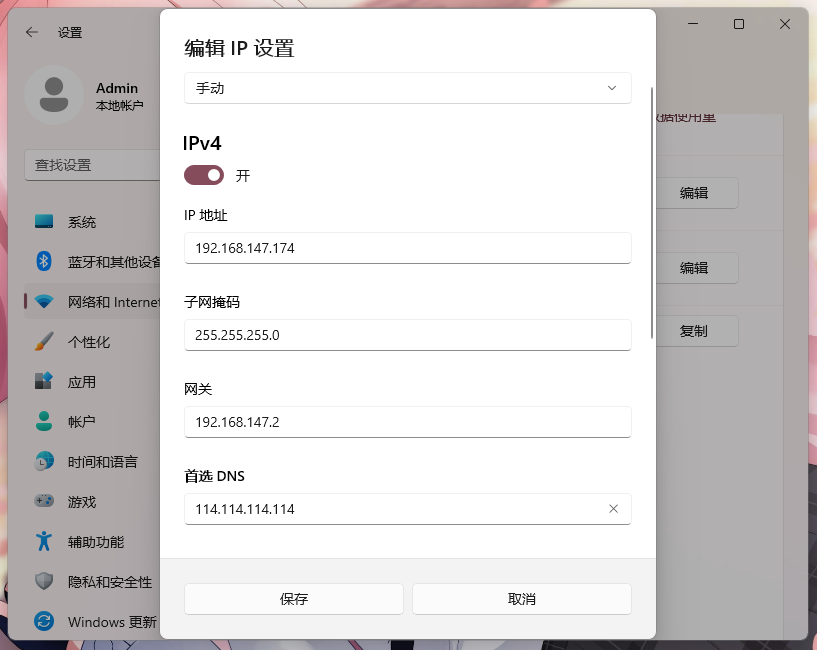
另外一个问题是如果老师在用 Administrator 上课，下课后关机是可以直接断开我们的连接并断电，没有任何提示，这导致有时候程序没保存就连不上了，除了开 AutoSave，貌似没有什么办法防止这种情况出现。
拓展
这些内容也是我后来加的，防止大家踩坑。
在 Win11 上启用远程桌面相当简单，直接设置-系统-远程桌面，启用它就行，但在 Win10 里面就不一样了。
我们找到一台 Win10 1703 电脑，发现它连 Ping 都 Ping 不通，这个好办，干掉 Windows 防火墙。但问题是你启用远程桌面要在高级设置中禁用 NLA，不然证书问题你连不上去。
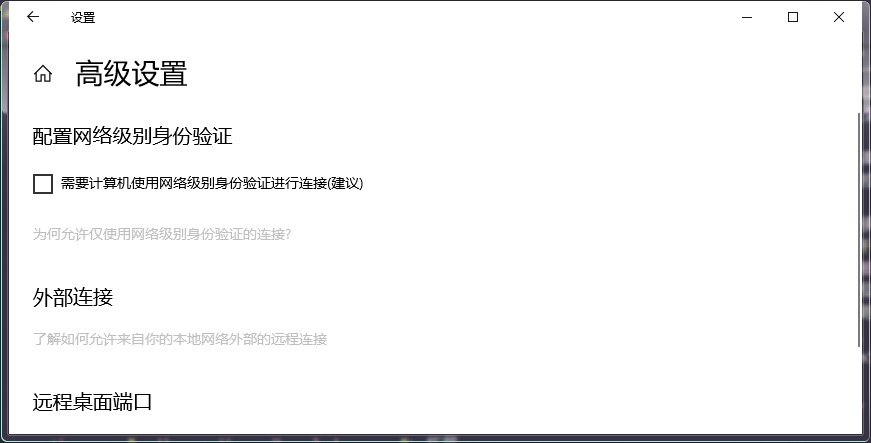
需要注意的是，这张图片在 Win10 2009 上截取，1703 之类较早版本高级选项没有 UWP 设置项，而是传统的控制面板选项卡，不过没关系，换汤不换药。
总之，我们是真的得吃了，我们成功殖民 5 台电脑，并且我还专门用 PhotoShop 做了一张壁纸，每搞定一台系统就给它换掉壁纸，代表这台电脑以及被“hack”了。按理来说，我们只需要尽情享受这意外的至高算力，故事也在这里画上圆满的句号，但今天发生了一件事，彻底激起了我的怒火。
周三中午，我早早吃完饭，像往常一样在自己班上登录 RDP，此时我还没有登上 404，而是先登录 207 拷文件。我还没操作多久，就听到广播里传来一阵厚重的声音——那是年级组某个老师的声音：“X 班，X 班，...，XX 班，不要再玩电脑了，马上来年级组办公室。”他是怎么知道有人玩电脑的呢？每个班上前后都装了监控，他们只要想巡查，随时看得到，问题是现在是下课时间，本来也不属于他们管辖的时间范围，而且天天看摄像头视奸我们有意思吗？此时我真他妈想去厕所抠两坨屎来糊摄像头上。老子 tm 只是写会代码，又没玩游戏看视频，你到底要寄吧干什么？这种事也不是第一次了，老子之前有一天在教室里学 AE CS6，然后惨遭制裁。那一刻，我深深明白，我们用技术换来的自由，在权力结构面前是如此的脆弱。年级组的命令如同圣旨，具有至高无上的权威，我只能关掉显示器下楼。呜呼，南方之大，已经容不下一台安静的 Win11 了。
好在，他们没有罚我，但这也让我感到后怕。与此同时，那个开辟 207 教室的同学正躲在 207 教室里，没有遇到任何危险，那只能说我运气不好了，但 207 那个机子触摸真的是一坨大的，我可不希望拿那台机子开发。
后来，207 也出事了，如图
现在，我需要好好权衡一下。直接去 404 是绝对不可能的，在自己班上 RDP 已经被抓过一次了，也许只是运气问题，但下次被抓的后果我可不敢承担，目前来看 207 最安全，因为在我们挖掘 404 之前将 207 的电脑作为备用机，已经有了一小部分开发环境（VSCode 一定要装 System！血的教训！），甚至登录了自己的一些账号，虽然最近也有人在那里上培优，安全性也减弱了。目前来看最安全的方法是去机房，机房可以直接连上 404，而且有键鼠也舒服，老师也不管，但问题也很明显——去机房的时间少之又少，不能在我们的考虑范围内。而且就算我们能找到一个完全安全的环境，也干不了什么大事，一是时间太分散，对于编程这种极需专注的活动是非常不利的，有可能写一半上课铃响，下课后再继续写，灵感就没了。二是学校学习生活早就把我们折腾的身心俱疲，也没有什么精力去写东西了。但无论怎么说，这次行动的结果虽然没达到预期，但也让一台被遗忘的电脑重新为人服务，也进行了一次次惊心动魄的挑战权威，更是枯燥的校园生活中有意思的发光时刻。
这束光也并没有只照在我们身上，像所有发现了秘密基地的孩子一样，我们忍不住将这篇文章小心地分享给了少数信得过的、同样被卡顿电脑折磨的朋友。没有具体的坐标，只有方法。
如今，已经有多名同学找到不常用（例如录播教室）内的高性能电脑，他们或用这些电脑打游戏，或编程，或上网。他们使用同样的方法，在未被封死的 3389 端口进行着一次次数字游击战。
下面是 207 电脑的截图，这台机子目前只有我一个人和某位神秘人用，主要用来写程序、挂迅雷。
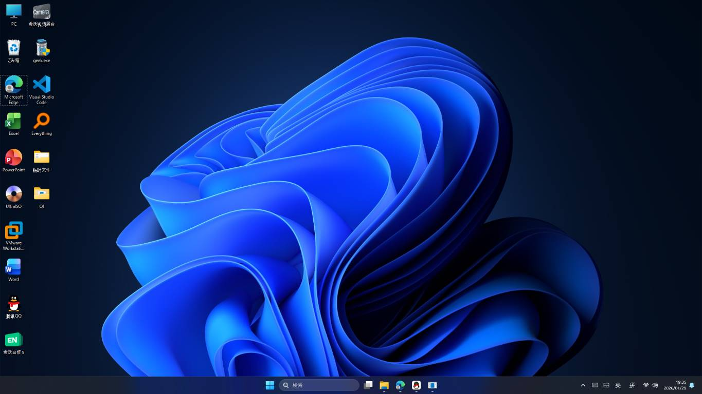
下面是 404-2 电脑的截图，给 AbCd 编程用，但由于它出色的性能，已经被各班级当成游戏机。
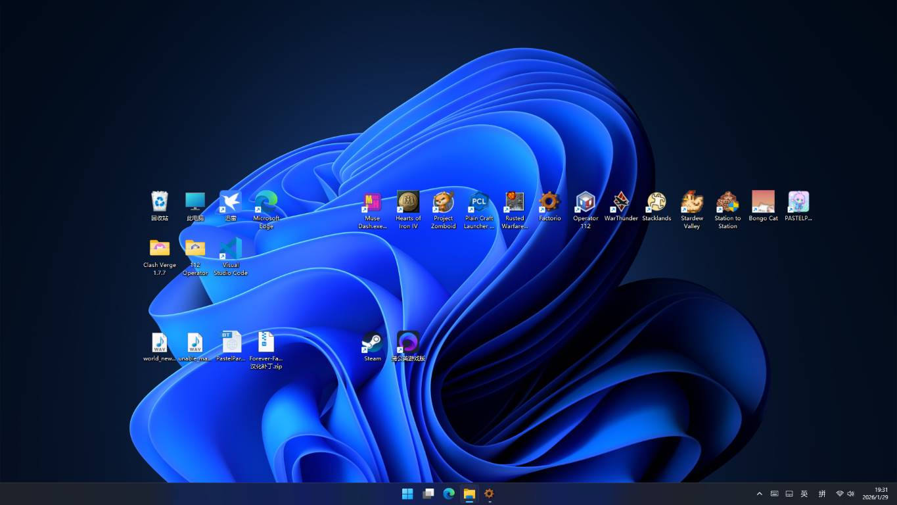
另外，在文章的末尾，我特别想表达对我们信息老师的感谢，她们虽然没有参与这个计划，但她们允许我们在课上远程连接，写自己的程序，并给予我们鼓励和支持，到目前为止我最伟大的程序 EasiNote Theme Patcher 的很大一部分代码在机房内完成，她们为整个计划的最后一端提供有力的支撑。
再跟大家讲点有意思的，在任务管理器里可以看到其他用户（比如 Administrator）并将他们断开连接，注销，或者发送消息，AbCd 就给正在上课的老师发送了一条消息，证明我们曾经“入侵”过这里。
他发的是什么呢？
好难猜啊。
附：xxt 向 207 发送的消息
--------
来自 黑调的低客 的消息
The computer was hacked! :P
This message is sent from BlackDick
 2026/5/13 补
2026/5/13 补
这篇文章已经发了快半年了，在那几台机子的陪伴下，我们也收获不少：kingstar使用404-2打游戏，用207和自己的女朋友聊天，我和AbCd使用这些电脑编程，进一步提升自己的前端水平，顺便学了点。。安卓开发？
然而，最近发生的一件事令我刻骨铭心，这不仅是一次惨痛的教训，也给我上了一节很重要的课。
事实上，在这之前我们就被别人举报过，年级组组长和一些老师也批评过我们，说我们占用学校的电脑搞开发，但我们都没有太在意，因为我们相信，第一，ltsc系统登录上去他们看不见，第二，以404-2的性能肯定足够日常教学了。
正如我之前所说，我将这些方法写成文档，分享给很多感兴趣的人，我也在两个月前开发《南方中学可视化网络扫描仪》（如下图所示）这个Python+flask的程序可以扫描学校所有开了3389和5900端口的设备，看在不在线，还能一键自动连接。
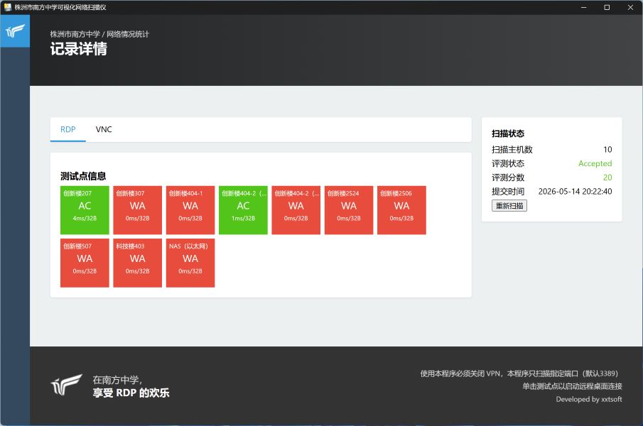
这几个月以来，404-2的账户越来越多，开始菜单里已经从最初的administrator和我们自己建的账户，到现在已经有五个账户了。kingstar跟我抱怨，登录的人太多，电脑越来越卡，我却并不在意，作为信息社前副社长，我是很支持任何像我这样的人进行技术探索的。
某一天中午，kingstar像往常一样想登录404-2的Salt打游戏，却发现404-2的IP 能ping通，却无法登录账户，我使用vnc连接到电脑，发现我们的账户竟然消失了！但是其他账户都在。
我们认为是有些畜牲把这个账号删掉了，针对我们。现在kingstar就很惨了，游戏存档全在user目录里，只能建账户重新打。从那之后我就上了个心眼，绝不会再把这些事情告诉别人了。
几天前，我把AbCd带到自己班上，给他推荐一个开源的第三方rdp工具：1remote，可我没演示多久，AbCd突然跑出门外。
我回头一看，班主任竟站在我后面！
我立即关掉窗口，点开离我最近的一个文件夹，假装找课件。班主任问我：“这是什么东西？”
“什么什么东西？”
班主任的声音高了八度：“那个有很多地址的是什么？”
“我不知道啊。”
看着班主任的脸越来越难看，我打开开始菜单，长按那个图标，点击卸载：“你要不喜欢我删了就行。”
班主任拦住了我，对我吼了一句：“滚我办公室里去！”
后面的事就不用说了，他很严肃的骂了我，说我一而再再而三的连别的班的电脑，说我不把技术用在正道上。你说我冤吧那倒也是，我只开了一个账户，也没打游戏刷视频，但我确实也有错，毕竟最开始是我搞rdp的。此时，年级组组长也在那里，他插了一句：“原来是你干的啊，我们上课电脑好卡的嘞！”
此时，我才明白，404-2那个被我们奉为珍宝的新款希沃并不是超算，它的性能也不是无限的。
此刻，我也才明白，我从小到大一直扮演着一个“烂好人”的角色，总是想将最好的东西无条件分享给别人，但因此失控的代价，是我很难承受的。
从那以后，我删掉所有多余的账户，最多只保留一个给我们内部使用。并且我也立了个规矩，结束会话必须注销当前用户，因为我实在不忍心看到vscode这种electron写的庞然大物塞满那小小的8G内存。
周一，我们开了全年级学生大会，年级组组长像往常一样念完违纪处分名单后，提到rdp的事。当时有人带了手机录音，年级组组长的原话是这样的：
有些同学把教室里的电脑当网络服务器来用，在家里都能访问教室里的电脑了，另外还有四个账户，如果你还有资料，请你尽快清走，不行我也马上给他格式化了啊，教室里的电脑是教学设备，不是你的服务器，哪有这么便宜的免费服务器，好了不讲了啊。
听了这话，我是真绷不住了，我在这一刻理解了文不及义的真正内涵，他想表达的东西我都懂，但这话说的。。不说“网络服务器”一词暴露出他的专业知识缺陷，这些话不能说意思错了，简直是牛头不对马嘴，在家里访问学校的电脑？原来南方的局域网这么有实力的吗？
当然，网上说说就算了，现实中谁不想要一个12核8G百兆带宽免费校内cdn扛DDOS的首年￥0.0一年后还是￥0.0的高性能免备案服务器啊
虽然他因为自己的错误认知当着全年级人的面义正言辞地警告了一个根本不存在的问题，但这也为我敲响了警钟，我也希望这是最后一次。做好人，做好事也要有边界，我可能高估了别人的善意，也高估了它的性能，最重要的是，我让事情失控了。
事实上，我也觉得很矛盾，在我需要帮助时，有很多人帮助我 。我也想用自己并不算强的技术尽可能帮助有需要的人，但做好事的后果，也许是我们承担不起的。问题不在于分享本身，而在于没设边界，高估自己对失控的掌控力。
不过，我也不想过多评价这件事，因为谁还记得这是一篇技术类文章来着，而且至今我也没有什么太大的实质性损失，年级组并没有格式化电脑，我在很久之前就不直接在电脑上写代码，而是先rdp连接上去，再中转连接到自己家里的电脑。只是由于账号太少，有时我需要在机房套三层远程（如图所示）因此我决定寻找新的解决方案。
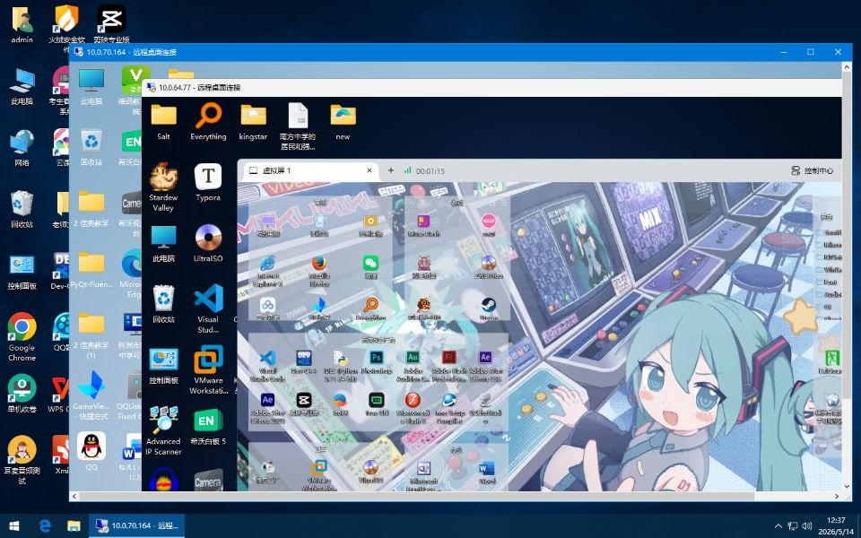
众所周知高中是不能带电子产品的，但是小设备应该还好藏。在U盘里安装winpe，或者激进点，上wintogo，貌似是一个不错的选择，但驱动问题暂且不说，学校机房电脑都是云主机，没法修改引导。所以我们需要有自主计算能力的设备。像树莓派，电脑棒等产品的价格也不是普通学生能负担得起的。不过篇幅限制，这些就不展开讲了。